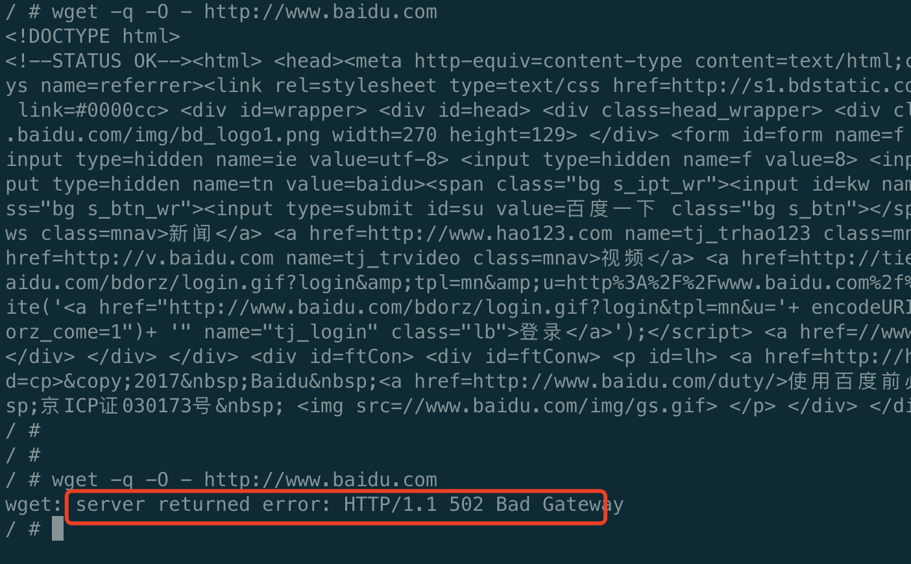

Istio学习之CRD3⃣️：ServiceEntry
服务网格中的工作负载想要访问网格外的服务时，有以下三种方法：
- 允许Envoy代理将请求透传到未在网格内部配置的服务（默认，通常情况下配置更严格的控制是更可取的）
- 配置 ServiceEntry以提供对外部服务的受控访问。
- 对于特定范围的IP，使用
global.proxy.includeIPRanges配置完全绕过Envoy代理。
本篇主要来介绍一下OutboundTrafficPolicy.Mode的设置，ServiceEntry的使用与概念。
介绍
首先还是献上官方文档：https://istio.io/latest/docs/reference/config/networking/service-entry/
样例
apiVersion: networking.istio.io/v1alpha3 kind: ServiceEntry metadata: name: external-svc-mongocluster spec: # DNS名称 hosts: - mymongodb.somedomain # not used addresses: - 192.192.192.192/24 # VIPs # 关联的端口 ports: - number: 27018 name: mongodb # 端口协议：HTTP, HTTPS, HTTP2, GRPC, MONGO, TCP或TLS protocol: MONGO # 网格的角度，内部 or 外部服务，MESH_INTERNAL / MESH_EXTERNAL location: MESH_INTERNAL # 主机的服务发现模式： NONE / STATIC / DNS resolution: STATIC # 外部服务在网格内的域名和网格外的域名不同，在 endpoints 中配置原始域名： endpoints: - address: us.foo.bar.com ports: https: 8080 - address: uk.foo.bar.com ports: https: 9080
演示
首先查看istio的外部服务的访问控制配置，即MeshConfig.OutboundTrafficPolicy.Mode（传送门），默认为ALLOW_ANY，即istio的egressGateway会允许调用未知的服务，将请求透传到未在网格内部配置的服务
# 查看当前模式 # kubectl get configmap istio -n istio-system -o yaml | grep -o "mode: ALLOW_ANY" mode: ALLOW_ANY # 如果没有配置模式，默认为ALLOW_ANY，可以手动添加 outboundTrafficPolicy: mode: ALLOW_ANY此时进入busybox访问www.baidu.com，可以访问成功

修改访问模式为REGISTRY_ONLY
kubectl get configmap istio -n istio-system -o yaml | sed 's/mode: ALLOW_ANY/mode: REGISTRY_ONLY/g' | kubectl replace -n istio-system -f - # 切换回Allow-all kubectl get configmap istio -n istio-system -o yaml | sed 's/mode: REGISTRY_ONLY/mode: ALLOW_ANY/g' | kubectl replace -n istio-system -f -此时进入busybox访问www.baidu.com，发现已经访问不了（可能需要等一段时间来使配置生效）

创建对应的ServiceEntry服务条目，将外部资源注入到istio内部网络
apiVersion: networking.istio.io/v1beta1 kind: ServiceEntry metadata: name: demo-se spec: hosts: - www.baidu.com location: MESH_EXTERNAL ports: - name: http number: 80 protocol: HTTP resolution: DNS# 查看所有的serviceEntry # kubectl get se NAME HOSTS LOCATION RESOLUTION AGE demo-se ["www.baidu.com"] MESH_EXTERNAL DNS 37s此时进入busybox再次请求，发现可以访问到

总结
- 使用默认的Allow-all的访问外部服务控制使用简单，但缺点，即丢失了对外部服务流量的 Istio 监控和控制；比如，允许调用所有未知的外部服务，外部服务的调用没有记录到 Mixer 的日志中。
- 在服务调用过程中会使用到外部的服务，外部服务和本身集群内的服务无任何关系，通过ServiceEntry将该服务注册到 Istio 网格，在集群内部就好像访问自身的服务一样，我们还可以结合VirtualService、DestinationRule进而对网格内调用外部服务使用一些高级的治理能力，例如限流、重试等等对服务治理能力支持。
- 现实的世界中，并不能做到所有的业务都容器化，Istio也意识到了这个问题，所以正在支持非容器部署的业务。除了ServiceEntry，又增加了WorkloadEntry，从而支持将vm部署的业务纳入mesh中。